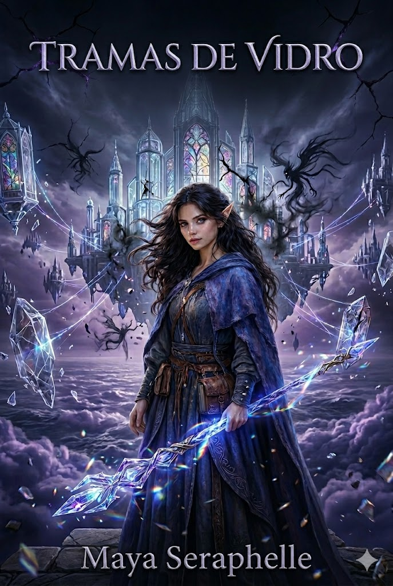
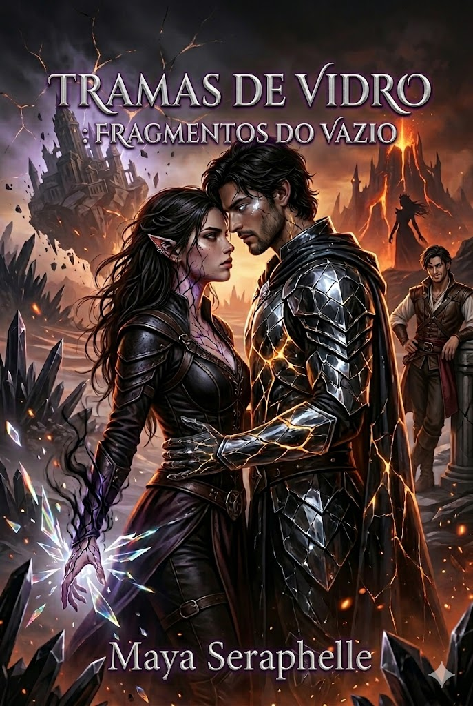
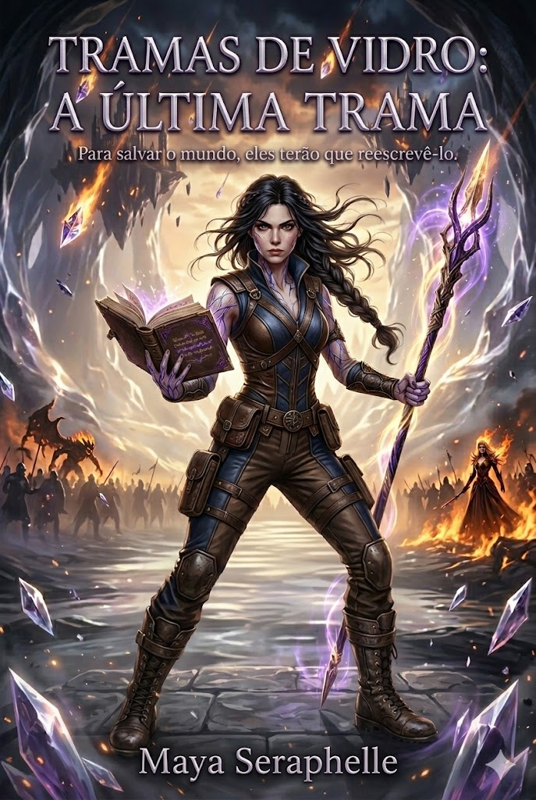
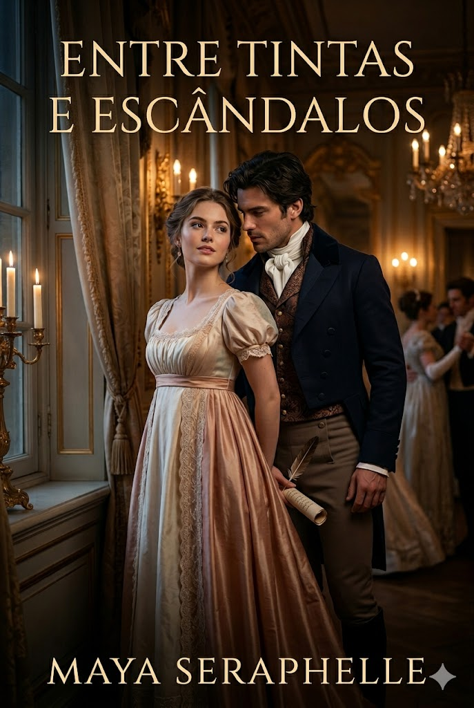

Sempre acreditei que as histórias não pertencem apenas ao papel; elas vivem no espaço entre quem escreve e quem lê. Minha jornada com as palavras começou muito antes do meu primeiro contrato editorial. Lembro-me vividamente de uma tarde de chuva na casa da minha avó, quando eu tinha apenas sete anos. Encontrei uma máquina de escrever antiga e, em vez de brincar lá fora, passei horas tentando entender como aqueles tipos de metal transformavam meus pensamentos em algo físico. Naquele dia, escrevi meu primeiro "conto": a história de uma montanha que queria viajar pelo mundo. Desde então, nunca mais parei.
Hoje, após o lançamento de obras que tocaram tantos corações, senti que precisava de um novo lar. Um lugar onde eu pudesse olhar nos olhos dos meus leitores sem as limitações das redes sociais.
Para tirar esse sonho do papel, não trabalhei sozinha.
Eu queria que este site fosse mais do que um portfólio; queria que fosse uma comunidade.
• Resenhas sinceras
• Desafios literários
• Listas curadas
Este site é o meu espaço aberto, minha biblioteca e o ponto de encontro para todos vocês.
Fiquem à vontade, a casa é nossa.